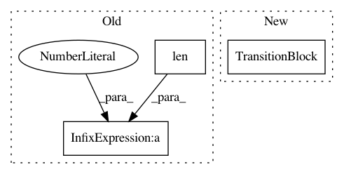

00c06ff2b04c3c991b6fbe1281ff3eede9ca4f94,gluon/gluoncv2/models/darknet.py,DarkNet,__init__,#DarkNet#Any#Any#Any#Any#Any#Any#Any#,156
Before Change
bn_use_global_stats=bn_use_global_stats,
pointwise=(len(channels_per_stage) > 1) and not(((j + 1) % 2 == 1) ^ odd_pointwise)))
in_channels = out_channels
if i != len(channels) - 1:
stage.add(nn.MaxPool2D(
pool_size=2,
strides=2))
After Change
def darknet_tiny(**kwargs):
DarkNet Tiny model from "Darknet: Open source neural networks in c," https://github.com/pjreddie/darknet.
Parameters:
----------
pretrained : bool, default False
Whether to load the pretrained weights for model.
ctx : Context, default CPU
The context in which to load the pretrained weights.
root : str, default "~/.mxnet/models"
Location for keeping the model parameters.
In pattern: SUPERPATTERN
Frequency: 3
Non-data size: 3
Instances
Project Name: osmr/imgclsmob
Commit Name: 00c06ff2b04c3c991b6fbe1281ff3eede9ca4f94
Time: 2018-10-29
Author: osemery@gmail.com
File Name: gluon/gluoncv2/models/darknet.py
Class Name: DarkNet
Method Name: __init__
Project Name: osmr/imgclsmob
Commit Name: 395b1fc3df754c21a6b7aebc79a1d950bfdc1efc
Time: 2018-10-29
Author: osemery@gmail.com
File Name: pytorch/pytorchcv/models/darknet.py
Class Name: DarkNet
Method Name: __init__
Project Name: osmr/imgclsmob
Commit Name: 90fcbc6bc311bab0454ba03f0ba8fb8717460d19
Time: 2018-10-29
Author: osemery@gmail.com
File Name: chainer_/chainercv2/models/darknet.py
Class Name: DarkNet
Method Name: __init__